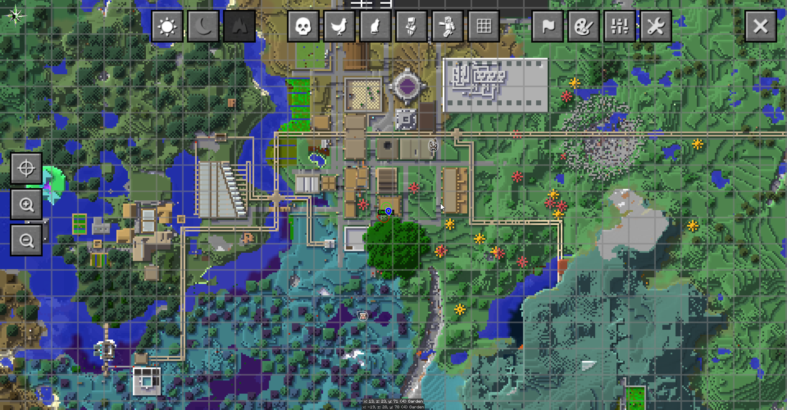

<html>
<head>
	<title>History of the Town</title>
	<meta charset="UTF-8">	
	<link rel="stylesheet" href="./style.css" />	
</head>
</html>

<body>

<div class="maindiv" id="maindiv">
	<script src="./main.js"></script>
	
	<div class="bodydiv">
		<h1>History of the Town</h1>
		Unlike many of our other worlds, the iconic FTB Infinity Evolved world never had written history or laws. About 4340 in-game "days" (each 20 minutes of uptime) of history passed before this document began to be assembled. During that time the town has undergone several stages:
		<br><br>
		<b>- Wooden Period</b> (early to mid June 2020): The relatively peaceful pre-war times. Deastl Town was fully separate from the main town on the opposite bank of the river.
		<br><br>
		<b>- Soviet Squenis Republic / Wartime Period</b> (several days in mid June 2020): The nearby towns Deastl Town and Megan Town unified with us into the Soviet Squenis Republic. A pointless war ensued against Ivy's nation which accomplished nothing.
		<br><br>
		<b>- Postwar Period</b> (late June to early July 2020): A period of growth and prosperity... but the large companies Kmazon and Walmarx started to creep up in the city. The close alliance with Deastl Town continued.
		<br><br>
		<b>- Hiatus</b> (July 2020 to November 2022): The city went untouched for more than two years.
		<br><br>
		<b>- Walmarx Period</b> (November 2022 to present): The influence of the megacorporation Walmarx became the dominating force of the city. The old nations became vestigial, and full peace with Ivy is reconciled.
		<br><br>
		This history is being written down in full form for the first time here. I intend to document and reconstruct the full history of when every structure was built, given the evidence and attestation we have available.
		<br>
		If you have memories or screenshots of the events that happened or are happening in this world, it would be wonderful to see and add them here with your permission. Thank you!
		<br><br>
		<i>Note: All timestamps are in Eastern Time.</i>
		
		<h2>Wooden Period</h2>
		
		<b>2020 June 16 11:50PM</b><br>
		In this photo the city is not much more than an extended house complex. The only buildings are my house, Rails Incoropolated[sic], and the old ore processing building. Red Alloy Solutions is under construction. The smeltery exists, but no building is built around it yet.
		<br>
		Train lines to my house and out east are visible in the photo and minimap. The minimap also shows that the train station in Deastl Town was already built at this time.
		<br>
		This is also the first photo of the absurdly crowded cattle pasture (I completely forgot about this)
		<br><br>
		
		<b>2020 June 17 3:43AM</b><br>
		This photo was taken from the roof of my house, facing west towards Deastl Town. A full view of the main train hub in Deastl Town is visible in the minimap. Deastl's tower (under construction) looms ominously in the distance.
		<br><br>
		
		<b>2020 June 17 3:48AM</b><br>
		The first photo of the national landmark "Self Portrait of a Creeper", a passionate final work of art by an unnamed artist. The crater is probably older than the timestamp.
		<br>
		The Red Alloy Solutions building appears to be finished.
		<br><br>
		
		<b>2020 June 17 12:15PM</b><br>
		This early photo of the city was taken by Deastl standing at the entrance to Megan's house. The buildings seen here match what is seen in the minimap in the previous photos.
		<br><br>
		
		<b>2020 June 18 1:07AM</b><br>
		Experimental rail intersections. The minimap reveals several buildings built on this day. The newly built granary is probably already running automatically, as the wheat farm behind it looks freshly planted. The smeltery building is also newly built.
		<br><br>
		
		<b>2020 June 18 8:49PM</b><br>
		This photo was taken by Deastl near the tower in Deastl Town. The massive lag-inducing water turbines are back there, but they are to be demolished soon after. The very big Big Reactor is visible too.
		<br><br>
		
		<b>2020 June 18 10:11PM</b><br>
		The cactus farm is newly built on this day. The railroad control building is under construction. A new rail line in the south has been built; I think this is an older version of the route to Megan's house.
		<br>
		A much larger pasture is built out east for the cattle, and the overcrowded pasture is rightly re-moo-ved.
		<br><br>
		
		<h2>Soviet Squenis Republic / Wartime Period</h2>
		
		
		<b>2020 June 19 1:24AM</b><br>
		The first photo of the excellent Squenis Monument, the true centerpiece of the entire city. The second Squenis monument up in the trees was not built yet.
		<br><br>
		
		<b>2020 June 19 4:15AM</b><br>
		Inside the old circuitry of the railroad control building. The roof of the building is not yet built.
		<br><br>
		
		
		<b>2020 June 20 3:39AM</b><br>
		Two southern rail lines that will later be removed. The tree farm is now built. The roof on the railroad control building is now finished.
		<br><br>
		
		<b>2020 June 20 5:36AM</b><br>
		Map of the world around the time of the War. Prior to the war there was hardly any impetus to differentiate the nations. Nations outside of the Squenis Republic are deliberately scaled down to make them appear insignificant. This map is highly inaccurate overall. Instead of genuine geographic surveying, it served a political and propagandic purpose.
		<br><br>
		
		<h2>Postwar Period</h2>
		
		
		<b>2020 June 24 5:19PM</b><br>
		Both inns are now built. The Kommie Krab has been standing for two days. The Squenis Monument was replaced with diamonds, and now has its diamond chest. A second story is added to the Rails Incoropolated building.
		<br>
		Looking at the right of the photo, we can presume that the railroad to Megan's house has its now current route.
		<br><br>
		
		<b>2020 June 24 5:38PM</b><br>
		Close up of the Kommie Krab when it was the northernmost building in town.
		<br><br>
		
		<b>2020 June 28 10:25PM</b><br>
		The Kmazon building has been built; at this time it is unnamed. The Squenis Monument has returned to stone. The tech store is under construction (I'm standing on the unfinished wall taking this photo).
		<br><br>
		
		<b>2020 June 29 1:19AM</b><br>
		First photo of the Draconic power sphere. Several other new processing buildings in the industrial neighborhood can also be seen in the minimap.
		<br>
		In the minimap, the dirt Squenis Monument can be seen for the first time in the fir forest.
		<br><br>
		
		<b>2020 July 1 6:36PM</b><br>
		The ripple carry adder building is finished. Its first task is to add 9+10. The incorrect answer 19 (10011, flipped since we are viewing it from the back) is visible on the lamps toward the top of the image.
		<br><br>
		
		<b>2020 July 3 12:31AM</b><br>
		The train line was the main artery of the city for a while, and also its link to the outside world. But by this point we are all flying around with angel rings, so (like many things) the railroad's main purpose is now to look cool.
		<br><br>
		
		<b>2020 July 3 3:25AM</b><br>
		The two Squenii in alignment-- it looks like stone Squenis is holding a tiny dirt Squenis!
		<br>
		The tech store is finished for now, but won't be upgraded nor start running fully until post-hiatus.
		<br><br>
		
		<b>2020 July 3 3:33AM</b><br>
		The Kmazon building receives its name. The flower farm and the underground train stop are now visible.
		<br><br>
		
		<b>2020 July 4 5:48PM</b><br>
		The dreaded Walmarx is under construction. Its enormous parking lot lurks at the top of the map. The cattle pasture is gone now.
		<br><br>
		
		<b>2020 July 5 2:12AM</b><br>
		This photo was taken by Deastl. It is the first picture of the completed Walmarx on its opening night. The parking lot is absolutely packed with people excited to shop at Walmarx.
		<br><br>
		
		<h2>Post-Hiatus / Walmarx Period</h2>
		
		
		<b>2022 November 3 11:18PM</b><br>
		The city as it appeared immediately after the end of the hiatus, unchanged from 2020.
		<br><br>
		
		
		<b>2022 November 4 9:47PM</b><br>
		Photo taken by Deastl. One of the earliest pictures of Iron Nutz, the metal processing plant, immediately after its construction. This building contains two large smelteries and many, many trays for ingots to be cast.
		<br><br>
		
		
		<b>2022 November 11 6:49PM</b><br>
		First picture of the viaduct system: elevated tubing for passengers connecting the major areas in town.
		<br>
		Patty's house, a tree farm atop the Kmazon building, and one of Ivy's satanic shrines can all be seen now. The back parking lot of the Walmarx has been built as well. The tech store is being renovated and has a third floor under construction. The Squenis statue has been <i>enhanced.</i>
		<br><br>
		
		
		<b>2022 November 20 11:27PM<br>day ~4900</b><br>
		Thanks to new advances in turtle printing technology, we were able to put a screenshot from the game inside the game for the first time! In this photo, a King Slime wades through the river in front of the Grand Library.
	</div>
		<a href="../index.html">👈 back </a>
</div>

</body>